Per-List Backup and Restore
Write a mailing list's complete state to a JSON file, and rebuild the list from that file.
- Component
- Mailman Core
- Commands
mailman backup,mailman restore- Merge request
- mailman!1505 · 33 commits across 11 files
- Branch
- gsoc/per-list-backup-restore
- Mentors
- Abhilash Raj, Mark Sapiro, Stephen J. Turnbull
- Author
- Navya Khanna
What it solves
Mailman 2 kept each mailing list as a directory. Backing a list up meant copying a folder. Restoring it meant copying the folder back, which is about as simple as disaster recovery gets.
Mailman 3 moved list state into a relational database. That was right for scale, and it also quietly removed the escape hatch. If deleted a list today, there was no supported way to get it back: the members, the moderation rules, the aliases, the bans, all would just vanish. Everything needed to rebuild the list is sat in the database and nothing assembled it.
This adds two commands to Core, plus the IListBackupManager utility they both go through, so any front end can offer the same thing.
mailman backup <listspec> [output_path]
mailman restore <backup_file> [--listname NAME] [--overwrite] [--yes]The run
Following is one session against a real Mailman instance, not the test suite. The list is the scenario my mentor asked about while the design was being settled: 100 members, 2 owners, 3 moderators, with configuration set in every section a backup covers.
01 · Environment
A real instance
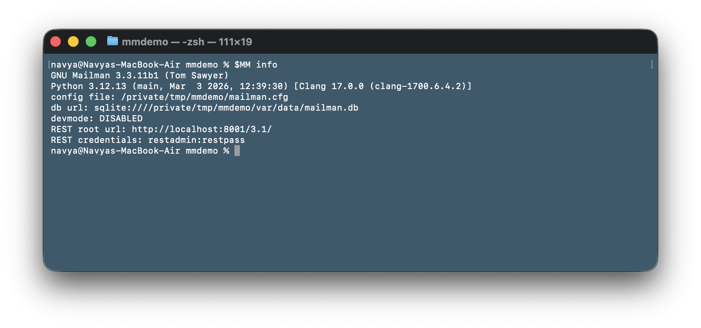
02 · Subject
The list
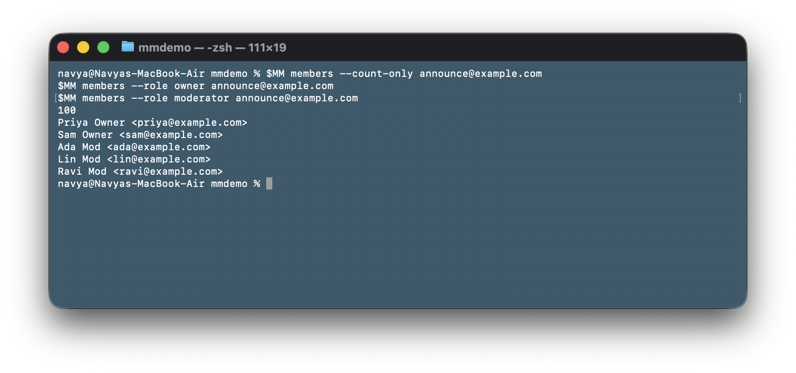
--count-only reports the member
roster alone; the backup carries all 105 entries.03 · Before
State in every section
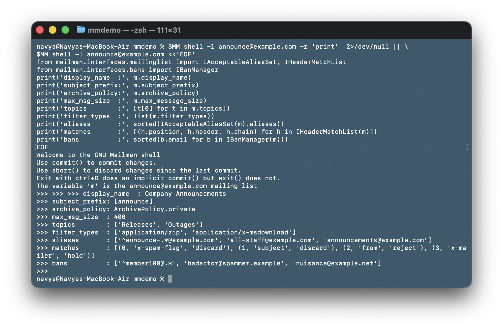
^member100@.*, is a regular
expression that matches a live member. That turns out to matter.04 · Export
mailman backup
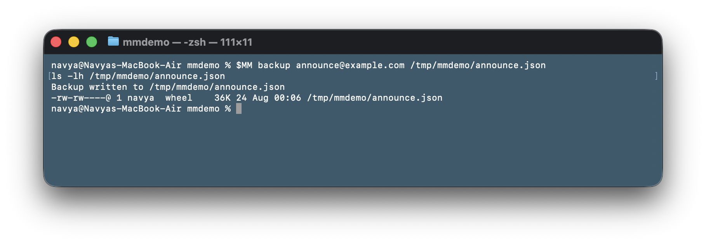
05 · Contents
What landed in the file
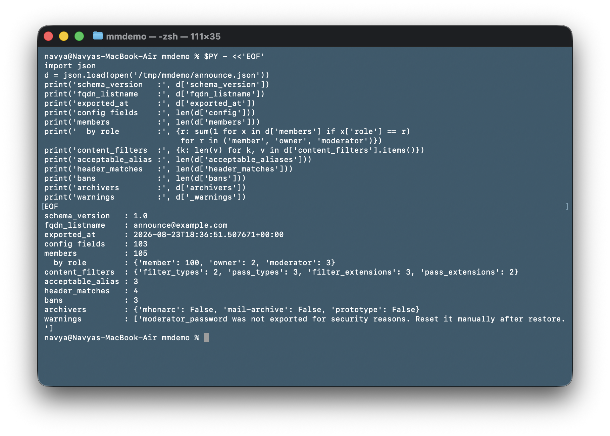
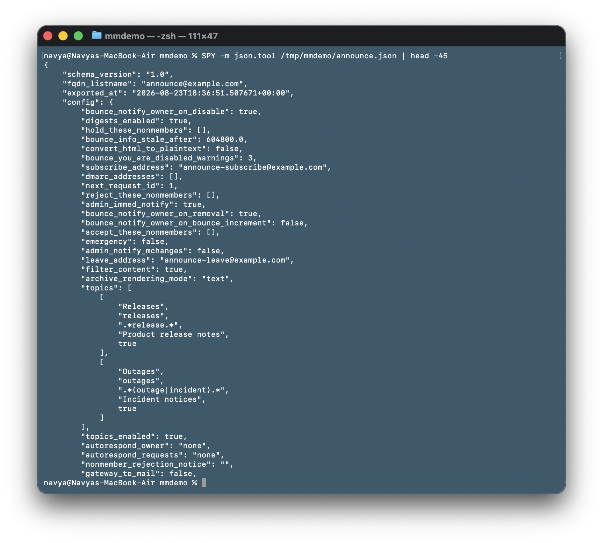
topics is a
PickleType of tuples in the database and JSON has no tuples, so it round-trips as
nested arrays and restore casts it back.06 · Schema
A well Validated format
A marshmallow schema checks the dict on the way out and again on the way in, before the first database write. Enum-backed fields are constrained against the running Mailman's own enums, generated at import time rather than hardcoded.
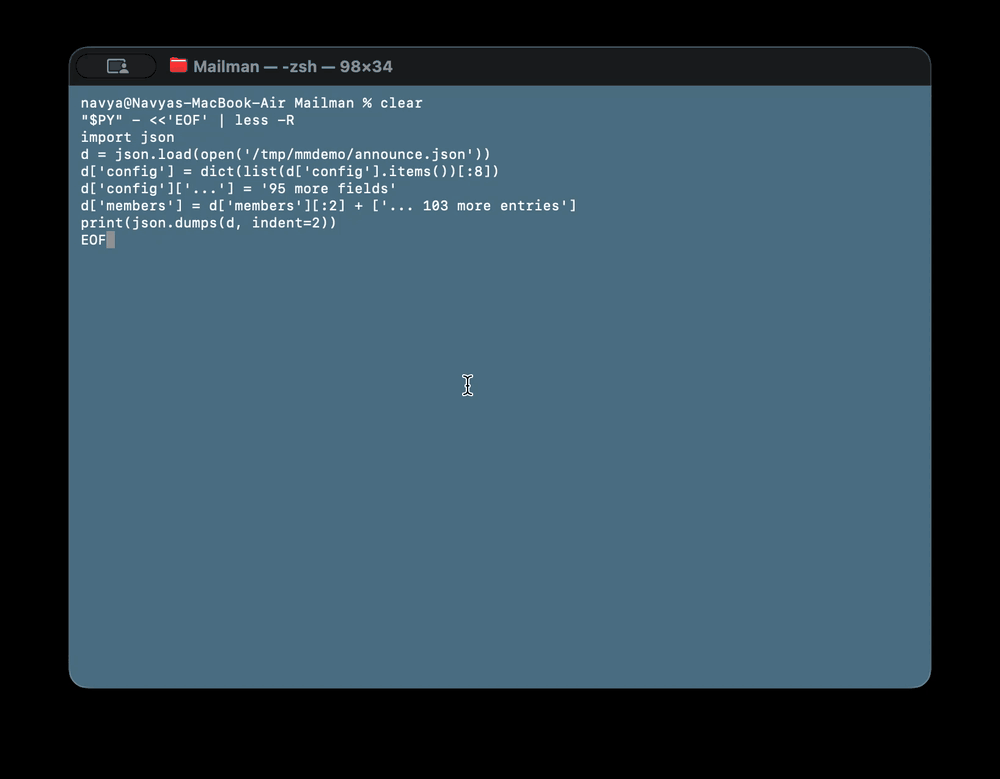
schema/list_backup_v1.py. A backup carrying an unexpected top-level
key is rejected, which is correct behaviour for schema_version 1.0.07 · Security
What is deliberately absent
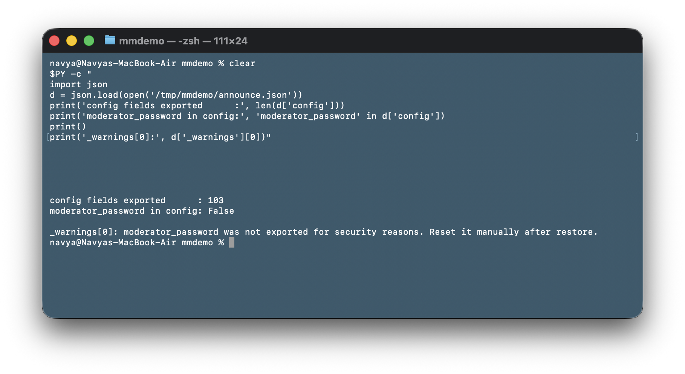
mailman restore repeats it on success.08 · Disaster
The list is deleted
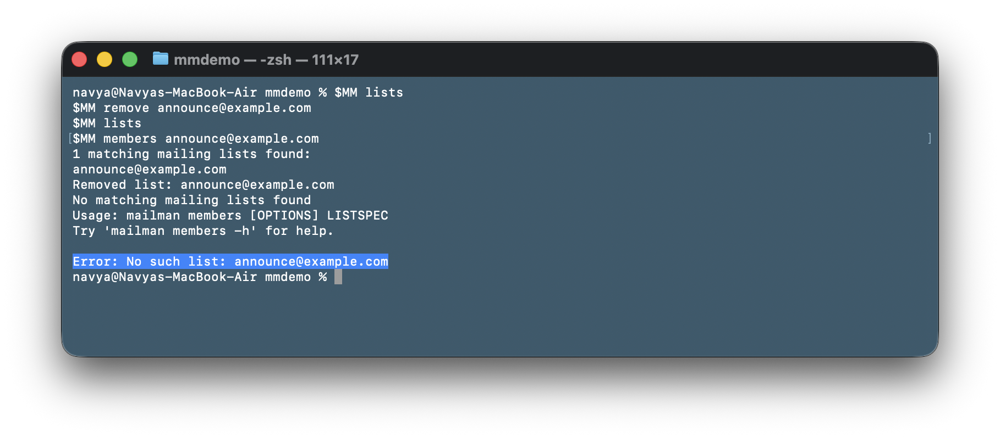
mailman members now errors.09 · Recovery
mailman restore
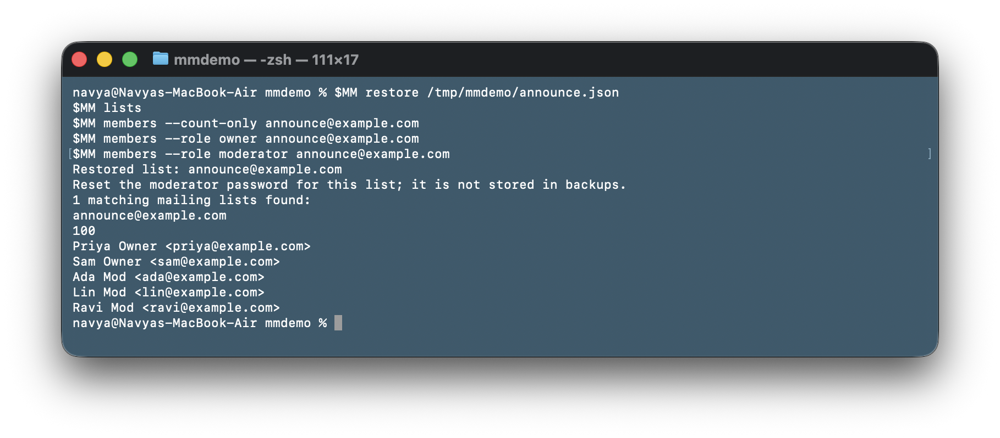
10 · Verification
Same command, before and after
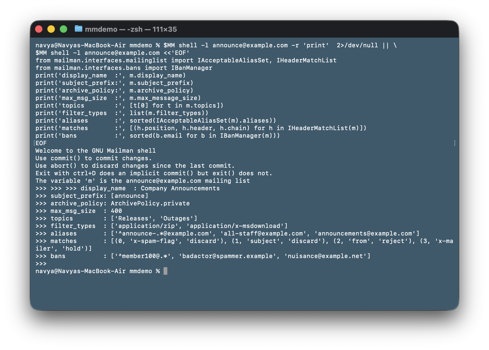
(0, x-spam-flag) (1, subject) (2, from) (3, x-mailer).11 · Per-member state
Preferences, not just counts
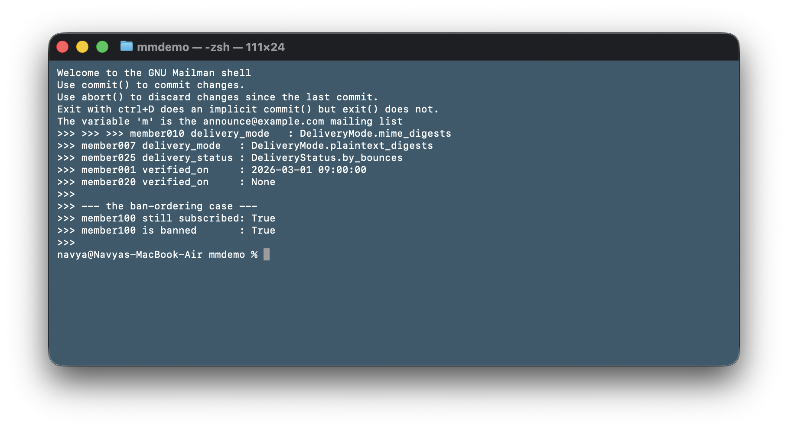
member100@example.com matches the live ban ^member100@.* and is
restored regardless.12 · Fidelity
The restored list re-exports identically
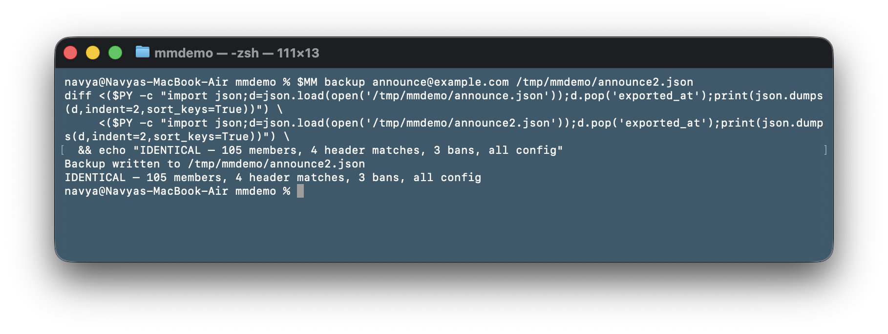
13 · Migration
Restoring under a different name and domain
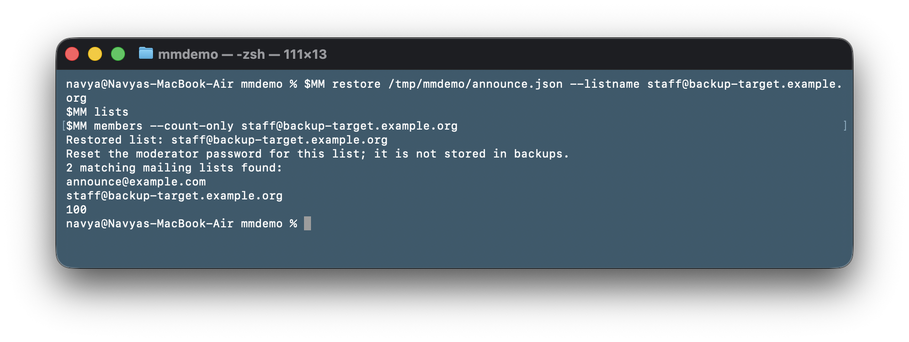
--listname overrides the name recorded in the file, so a list can be
rebuilt on a different server or moved between domains.14 · Failure modes
The refusal to do damage
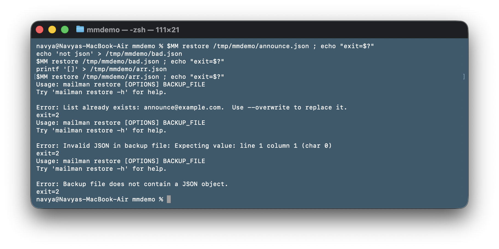
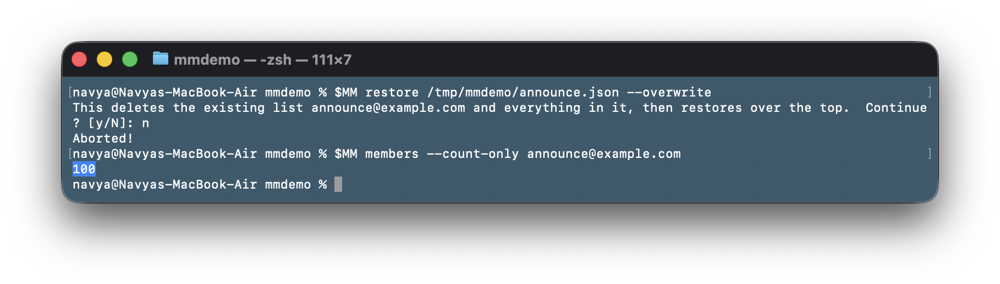
--overwrite is the only destructive path, so it asks first. Answering
no leaves the list untouched. --yes skips the prompt for unattended recovery,
where there is no terminal to answer it and click.confirm would otherwise
abort.Backup format
One JSON file at schema_version 1.0.
| Section | Contents |
|---|---|
| config | 103 scalar fields: every IMailingList attribute merged with the raw table columns the interface does not expose. Enums stored as names, durations as seconds, datetimes as ISO 8601 |
| content_filters | filter_types, pass_types, filter_extensions, pass_extensions |
| members | Every roster entry with role, display name, verification date, delivery mode, delivery status, moderation action, subscription mode |
| acceptable_aliases | Literal addresses and regular expressions, sorted |
| header_matches | Header, pattern, chain, tag and position, sorted by position |
| bans | List-scoped bans, literal and regex |
| archivers | Per-archiver enabled state |
| _warnings | Operator notes. Currently the moderator password caveat |
Domains are not included. IDomain holds server-level routing and Postfix
configuration, which has no clue on how a list behaves, and fqdn_listname already
identifies which domain a list belongs to. If that domain is missing on the target server, restore
stops through IDomainManager before writing anything.
Design
Why the logic sits in Core
The obvious alternative was to build this in Postorius as two buttons, assembling the file
client-side from endpoints that already exist: /config, /header-matches,
/bans, /archivers. Least work by a wide margin, and it was the first
suggestion on the table.
Two things ruled it out. Postorius is optional. Core is the only component you must run to operate a mailing list, and at least one other UI exists, so anyone not running Postorius would get nothing at all.
The second reason is more interesting. The REST API has no atomic semantics: creating a list and configuring it are separate calls. If the config call fails after the create succeeds, you are left with a list that exists and is wrong, which is worse than no list, because it looks like the restore worked. Inside Core the rebuild is one transaction. It completes or it rolls back to nothing.
The interface
IListBackupManager is a Zope Component Architecture interface registered in
configure.zcml. Callers use getUtility(IListBackupManager) and never
import the concrete class, so a second implementation, an S3 backend for instance, can be added
later without touching them.
def export_list(mlist):
"""Returns a JSON-serializable dict. No file I/O."""
def restore_list(data, fqdn_listname=None, overwrite=False):
"""Accepts a parsed dict, not a path."""Neither method touches the filesystem, which is the point. The REST endpoints that will call
them have an HTTP body, not a path. So the CLI owns file I/O and the library owns state.
fqdn_listname is a string rather than an IMailingList, because you cannot
require a list object when the whole job is recreating a list that no longer exists. Passing it
also overrides what the file says, which is how cross-domain restore works.
restore_list() never commits. mailman.bin.mailman already wraps every
subcommand in a transaction, so the caller owns it and any failure unwinds the whole restore.
How it was built
33 commits were made between 25 May and 20 August. The shape of the work changed twice, both times because of review.
| When | What |
|---|---|
| 25–29 May | ZCA interface, _coerce_for_json, config and content filter export, member rosters across all three roles |
| 1–3 Jun | Export integrity test, timezone-aware timestamps, ILanguage serialisation, isort length-sorting fixes |
| 26 Jun | First review lands. export_list() stops writing files and returns a dict; concrete manager moves into model/; utility registered in configure.zcml |
| 1–3 Jul | IBackupManager becomes IListBackupManager. Extended export: aliases, header matches, bans, archivers. mailman backup command. The utilities/backup.py stub is deleted |
| 7 Jul | Second review lands. The format needed a real schema definition rather than ad-hoc serialisation, so marshmallow goes in and export_list() validates its own output |
| 12–16 Jul | Raw SQLAlchemy columns merged into export (topics was among the ~25 the interface hides). restore_list() skeleton with version check and domain guard, create_list() lifecycle, scalar config restore with enum, timedelta and topics casting |
| 20 Aug | Enum constraints in the schema, the full restore engine, the round-trip and edge-case suites, mailman restore, NEWS entry |
The two review rounds are the reason the signatures look the way they do. Every change they asked for pointed the same direction: the library should deal in data structures, and let whoever calls it decide about files and transports.
Status
- Done
IListBackupManagerinterface and ZCA registration - Done Export covering all eight sections
- Done Restore in a single transaction, schema validated before the first write
- Done
mailman backup,mailman restorewith--listname,--overwrite,--yes - Done 67 tests · 100% branch diff coverage on 287 changed lines · green on SQLite, PostgreSQL and MySQL, Python 3.9 to 3.13
- Next
GET /3.1/lists/{listname}/backupandPOST .../restorein Core - Next
.backup()and.restore()in mailmanclient - Next Download and upload buttons in Postorius
The REST endpoints are specified and not implemented, and the two layers above them wait on
those. The library is already the right shape for them: export_list() returns a dict
and restore_list() takes one, with no file handling in either.
!1505 is open with 7 review threads outstanding.
Implementation notes
Header match positions are ranks, not slots
The project proposal argued that header match rules must be restored with
insert(position, ...), on the grounds that a list with rules at
[0, 2, 5] would otherwise collapse to [0, 1, 2] and lose information.
Writing the test to demonstrate that produced this instead, while building the fixture:
ValueError: There are 2 header matches for this list, the new
position cannot be 2 or higherNon-contiguous positions cannot exist. The position setter rejects any value at or
above the current rule count, and HeaderMatchList.remove() renumbers the remainder
into a contiguous run. So position encodes the order the antispam chain evaluates rules in, and
nothing else. Restore sorts by position and appends, which reproduces that ordering exactly and
survives a hand-edited file with gaps in it, where insert() would raise.
Members before bans
MailingList.subscribe() raises MembershipIsBannedError for any address
a list-scoped ban matches, and BanManager.is_banned() matches regular expressions,
not only literal addresses. A list can reasonably ban ^watched@.* while
watched@example.com is still subscribed. Restore bans first and every such member
throws, taking the whole operation down. Step 11 of the run above is this case, working.
Type detection reads the column, not the value
Inferring a config field's type from its current value breaks whenever that value is
None, which is the normal state for an enum column never set on a fresh list. The
enum name then falls through to a generic setattr and gets written straight into an
Enum column. Detection now checks the live value first, then falls back to the
SQLAlchemy column, whose TypeDecorator carries the enum class on its
.enum attribute. Interval columns have the same problem and the same
fix.
preferred_language fails late without a fallback
The setter takes a bare language code and stores it as-is. The getter resolves it through
ILanguageManager. Restore a list whose original server had a language this one does
not, and the restore reports success, then raises KeyError on every subsequent read,
somewhere unrelated and much later. Restore checks membership first and falls back to the site
default, which is what importer.py does.
A failed subscribe poisons the session
Calling subscribe() for an address already on the roster raises, and by then the
SQLAlchemy session is unusable for the rest of the transaction, so wrapping it in
try/except does not help. Restore checks is_subscribed() up front and
only calls subscribe() when it is certain to succeed. A backup listing the same
member twice restores cleanly.
Known limitations
Archiver round-trip can clear a list-level flag
ListArchiver.is_enabled reads
system_archiver.is_enabled and self._is_enabled but writes only
_is_enabled. On a server where an archiver is disabled globally, export records
False even when the list's own flag was True, and restore writes that
back, losing the list's setting for good. The only fix reaches into the private attribute, since
IListArchiver exposes nothing else, so it is flagged for the maintainers rather than
done unilaterally.
Member preference inheritance gets flattened
delivery_mode and delivery_status are lookup properties that walk
member, then address, then user, then system defaults. Export captures the effective value, so
restore writes an explicit member-level override where none may have existed. Those members then
stop tracking later changes to the site defaults. Exporting only explicit overrides instead breaks
restoring onto a fresh server, where the user and address preference objects do not exist at all.
The current behaviour always produces a working list, which seemed the better failure.
subscription_mode cannot be restored
It is derived from whether the subscriber is an IAddress or an IUser.
Restore always subscribes an IAddress, so a member originally subscribed as a user
comes back as an address. The field is exported for diagnostics.
Code
| File | |
|---|---|
| interfaces/backup_manager.py | The IListBackupManager interface |
| model/backup_manager.py | Export and restore engine |
| commands/cli_backup.py | Both commands |
| schema/list_backup_v1.py | Backup format schema |
| model/tests/test_backup_manager.py | 49 tests |
| commands/tests/test_cli_backup.py | 18 tests |
Proposed upstream as merge
request !1505, open for review. The last commit made during GSoC is
02660ea2.